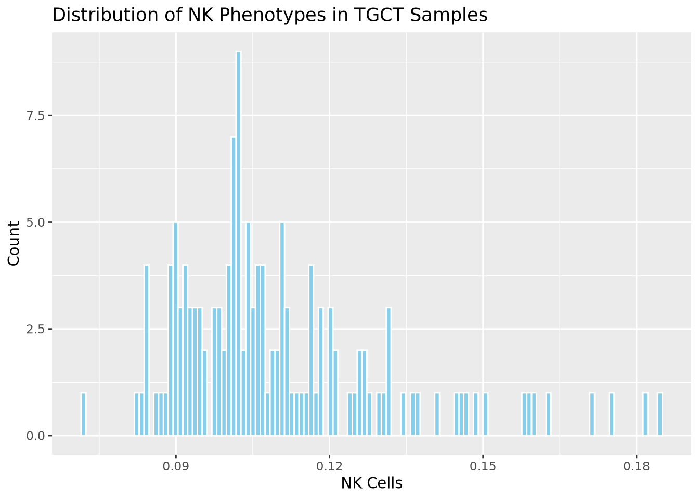

Immunetraits
Qirui Zhang
2025-04-08
Last updated: 2025-12-29
Checks: 7 0
Knit directory: diffdriver/
This reproducible R Markdown analysis was created with workflowr (version 1.7.1). The Checks tab describes the reproducibility checks that were applied when the results were created. The Past versions tab lists the development history.
Great! Since the R Markdown file has been committed to the Git repository, you know the exact version of the code that produced these results.
Great job! The global environment was empty. Objects defined in the global environment can affect the analysis in your R Markdown file in unknown ways. For reproduciblity it’s best to always run the code in an empty environment.
The command set.seed(20250319) was run prior to running
the code in the R Markdown file. Setting a seed ensures that any results
that rely on randomness, e.g. subsampling or permutations, are
reproducible.
Great job! Recording the operating system, R version, and package versions is critical for reproducibility.
Nice! There were no cached chunks for this analysis, so you can be confident that you successfully produced the results during this run.
Great job! Using relative paths to the files within your workflowr project makes it easier to run your code on other machines.
Great! You are using Git for version control. Tracking code development and connecting the code version to the results is critical for reproducibility.
The results in this page were generated with repository version c9b6bd3. See the Past versions tab to see a history of the changes made to the R Markdown and HTML files.
Note that you need to be careful to ensure that all relevant files for
the analysis have been committed to Git prior to generating the results
(you can use wflow_publish or
wflow_git_commit). workflowr only checks the R Markdown
file, but you know if there are other scripts or data files that it
depends on. Below is the status of the Git repository when the results
were generated:
Ignored files:
Ignored: .RData
Ignored: .Rhistory
Ignored: .Rproj.user/
Untracked files:
Untracked: .Rproj.user.bak_2025-12-29_193924/
Untracked: .write_from_rstudio_test
Untracked: analysis/ApoE_e2.Rmd
Untracked: analysis/ApoE_e2_split.Rmd
Untracked: analysis/ApoE_e4.Rmd
Untracked: analysis/ApoE_e4_split.Rmd
Untracked: analysis/new_task1.Rmd
Untracked: analysis/new_task2.Rmd
Untracked: code/run_workflowr.R
Unstaged changes:
Deleted: analysis/clinical_newplot.Rmd
Deleted: analysis/example.Rmd
Modified: analysis/immunesubtypes.Rmd
Deleted: analysis/immunesubtypes_newplot.Rmd
Modified: analysis/index.Rmd
Modified: diffdriver.Rproj
Note that any generated files, e.g. HTML, png, CSS, etc., are not included in this status report because it is ok for generated content to have uncommitted changes.
These are the previous versions of the repository in which changes were
made to the R Markdown (analysis/immunetraits.Rmd) and HTML
(docs/immunetraits.html) files. If you’ve configured a
remote Git repository (see ?wflow_git_remote), click on the
hyperlinks in the table below to view the files as they were in that
past version.
| File | Version | Author | Date | Message |
|---|---|---|---|---|
| Rmd | c9b6bd3 | Qirui Zhang | 2025-12-30 | Fix swapped sig/reg table labels |
| html | 9340750 | Qirui Zhang | 2025-04-09 | Build site. |
| Rmd | 20bba1e | Qirui Zhang | 2025-04-09 | Update analysis results |
| html | dbab83c | Qirui Zhang | 2025-04-09 | Build site. |
| html | a657e25 | Qirui Zhang | 2025-04-08 | Build site. |
| Rmd | 2fd166c | Qirui Zhang | 2025-04-08 | Add histogram |
| html | de1b649 | Qirui Zhang | 2025-04-08 | Build site. |
| html | 5c263d6 | Qirui Zhang | 2025-04-08 | Build site. |
| html | 5937609 | Qirui Zhang | 2025-04-08 | Build site. |
| Rmd | e61ca18 | Qirui Zhang | 2025-04-08 | Update analysis results |
| html | 65df609 | Qirui Zhang | 2025-04-03 | Build site. |
| Rmd | 442ada3 | Qirui Zhang | 2025-04-03 | Update all analysis |
knitr::opts_chunk$set(echo = TRUE)Overview
In total, 120 analyses were conducted across 20 tumor types, each classified into 6 phenotype groups(NK cells, T helper cells, CD8 T cells, Tfh cells, Tem cells, APM1). Among these analyses, 114 completed successfully, while 6 encountered errors. All six failed analyses were from the SKCM tumor type, and the failure was due to insufficient data — the corresponding input files contained only one sample.
Extracting and Summarizing Analysis Results
This code segment scans through analysis output directories, identifies relevant result files (*_resdd.Rd), extracts corresponding tumor types, immune phenotypes, and analysis modes(sig/reg).
get_files <- function(outputdir, tumors = NULL, phenotypes = NULL) {
files <- list.files(
path = outputdir,
pattern = "_resdd\\.Rd$",
recursive = TRUE,
full.names = TRUE
)
matching_files_txt <- sub("\\.Rd$", ".txt", files)
analysis_mode <- ifelse(grepl("_sig_", basename(files)), "sig", "reg")
inner_folder_names <- basename(dirname(files))
phenotype_folder_names <- basename(dirname(dirname(files)))
tumor_names <- mapply(function(inner_name, phen) {
pattern_front <- paste0("^", phen, "_")
tmp <- sub(pattern_front, "", inner_name)
tmp <- sub("_mutations$", "", tmp)
return(tmp)
}, inner_folder_names, phenotype_folder_names)
phenos_all <- phenotype_folder_names
filedf <- data.frame(
tumor = tumor_names,
phenotype = phenos_all,
mode = analysis_mode,
file = files,
filetxt = matching_files_txt,
stringsAsFactors = FALSE
)
if (!is.null(tumors)) {
filedf <- filedf[filedf$tumor %in% tumors, ]
}
if (!is.null(phenotypes)) {
filedf <- filedf[filedf$phenotype %in% phenotypes, ]
}
rownames(filedf) <- NULL
return(filedf)
}
filedf <- get_files(
outputdir = "/dartfs/rc/lab/S/Szhao/qiruiz/diffdriver/temp/output/immunetraits"
)
head(filedf) tumor phenotype mode
1 BLCA APM1 reg
2 BLCA APM1 sig
3 BRCA APM1 reg
4 BRCA APM1 sig
5 CESC APM1 reg
6 CESC APM1 sig
file
1 /dartfs/rc/lab/S/Szhao/qiruiz/diffdriver/temp/output/immunetraits/APM1/APM1_BLCA_mutations/testdiffdriver_reg_APM1_resdd.Rd
2 /dartfs/rc/lab/S/Szhao/qiruiz/diffdriver/temp/output/immunetraits/APM1/APM1_BLCA_mutations/testdiffdriver_sig_APM1_resdd.Rd
3 /dartfs/rc/lab/S/Szhao/qiruiz/diffdriver/temp/output/immunetraits/APM1/APM1_BRCA_mutations/testdiffdriver_reg_APM1_resdd.Rd
4 /dartfs/rc/lab/S/Szhao/qiruiz/diffdriver/temp/output/immunetraits/APM1/APM1_BRCA_mutations/testdiffdriver_sig_APM1_resdd.Rd
5 /dartfs/rc/lab/S/Szhao/qiruiz/diffdriver/temp/output/immunetraits/APM1/APM1_CESC_mutations/testdiffdriver_reg_APM1_resdd.Rd
6 /dartfs/rc/lab/S/Szhao/qiruiz/diffdriver/temp/output/immunetraits/APM1/APM1_CESC_mutations/testdiffdriver_sig_APM1_resdd.Rd
filetxt
1 /dartfs/rc/lab/S/Szhao/qiruiz/diffdriver/temp/output/immunetraits/APM1/APM1_BLCA_mutations/testdiffdriver_reg_APM1_resdd.txt
2 /dartfs/rc/lab/S/Szhao/qiruiz/diffdriver/temp/output/immunetraits/APM1/APM1_BLCA_mutations/testdiffdriver_sig_APM1_resdd.txt
3 /dartfs/rc/lab/S/Szhao/qiruiz/diffdriver/temp/output/immunetraits/APM1/APM1_BRCA_mutations/testdiffdriver_reg_APM1_resdd.txt
4 /dartfs/rc/lab/S/Szhao/qiruiz/diffdriver/temp/output/immunetraits/APM1/APM1_BRCA_mutations/testdiffdriver_sig_APM1_resdd.txt
5 /dartfs/rc/lab/S/Szhao/qiruiz/diffdriver/temp/output/immunetraits/APM1/APM1_CESC_mutations/testdiffdriver_reg_APM1_resdd.txt
6 /dartfs/rc/lab/S/Szhao/qiruiz/diffdriver/temp/output/immunetraits/APM1/APM1_CESC_mutations/testdiffdriver_sig_APM1_resdd.txtSummary Table of Significant Differential Genes
The provided function extracts and compiles results from analyses,
filtering specifically for significant differential genes based on a
threshold (dd.fdr < 0.1).
get_diff_table <- function(filedf){
pheno_all <- unique(filedf$phenotype)
numlist <- list()
for (p in pheno_all){
p_txtfiles <- filedf[filedf$phenotype == p, ]
numlist[[p]] <- list()
for (t in seq_len(nrow(p_txtfiles))){
txtf <- p_txtfiles[t, "filetxt"]
rdf <- p_txtfiles[t, "file"]
tumor <- p_txtfiles[t, "tumor"]
mode <- p_txtfiles[t, "mode"] # reg / sig
env <- new.env()
load(rdf, envir = env)
res_rdata <- env$res
res <- read.table(txtf, header = TRUE)
res$gene <- row.names(res)
res$mode <- mode
res$alpha <- sapply(res$gene, function(gene){
res_rdata[[gene]][["dd"]][["res.alt"]]$alpha[2]
})
sig_res <- res[res$dd.fdr < 0.1, ]
if (nrow(sig_res) > 0){
numlist[[p]][[ paste0(tumor, "_", mode) ]] <- sig_res
}
}
if (length(numlist[[p]]) == 0){
numlist[[p]] <- NULL
}
}
combined_df <- do.call(
rbind,
lapply(names(numlist), function(pheno) {
numlist.pheno <- numlist[[pheno]]
df.pheno <- do.call(rbind, lapply(names(numlist.pheno), function(tname) {
df <- numlist.pheno[[tname]]
df$tumor <- sub("_.*", "", tname)
df$mode <- sub(".*_", "", tname)
return(df)
}))
df.pheno$pheno <- pheno
return(df.pheno)
})
)
return(combined_df)
}
diff_table <- get_diff_table(filedf)Table under “Sig” Mode
library(DT)
diff_table_sig <- subset(diff_table, mode == "sig")
datatable(diff_table_sig, options = list(pageLength = 10))Table under “Reg” Mode
diff_table_reg <- subset(diff_table, mode == "reg")
datatable(diff_table_reg, options = list(pageLength = 10))Plotting the Number of Significant Differential Genes
The provided function generates bar plots illustrating the number of
significantly differentially expressed genes
(dd.fdr < 0.1) for each tumor type
across different phenotype contexts.
plot_diff_number <- function(filedf, mode = c("all", "reg", "sig")){
mode <- match.arg(mode)
if (mode != "all"){
filedf <- filedf[filedf$mode == mode, ]
}
pheno_all <- unique(filedf$phenotype)
numlist <- list()
for (p in pheno_all){
p_txtfiles <- filedf[filedf$phenotype == p, ]
numlist[[p]] <- list()
for (t in 1:nrow(p_txtfiles)){
txtf <- p_txtfiles[t, "filetxt"]
tumor <- p_txtfiles[t, "tumor"]
res <- read.table(txtf, header = TRUE)
numlist[[p]][[tumor]] <- c(
nrow(res[res$dd.fdr < 0.1,]),
nrow(res) - nrow(res[res$dd.fdr < 0.1,])
)
}
}
par(mfrow = c(length(numlist),1), mar = c(3,5,2,0))
for (phenotype in names(numlist)) {
colors <- rainbow(length(numlist[[phenotype]]))
plot(
NULL,
xlim = c(0.5, length(numlist[[phenotype]]) + 0.5),
ylim = c(0, max(unlist(sapply(numlist[[phenotype]], `[`, 1)))),
xlab = "Tumor Type",
ylab = "No. Genes",
main = paste("Context:", phenotype),
xaxt = "n", bty = 'n'
)
grid()
axis(
1,
at = 1:length(numlist[[phenotype]]),
labels = names(numlist[[phenotype]]),
las = 2
)
for (i in seq_along(numlist[[phenotype]])) {
bar_height <- numlist[[phenotype]][[i]][1]
rect(i - 0.4, 0, i + 0.4, bar_height, col = colors[i], border = NA)
}
}
}Visualization under “Sig” Mode
plot_diff_number(filedf, mode = "sig")

Plot specific genes
To visualize the data for specific genes, diffdriver has a plotting function:
mut_path <- "/dartfs/rc/lab/S/Szhao/qiruiz/diffdriver/tumor_specific_input/TGCT/TGCT_mutations.txt"
mut <- read.table(mut_path, header = TRUE, sep = "\t")
head(mut) Chromosome Position Ref Alt SampleID
1 16 30748991 C T TCGA-SN-A84Y
2 17 8439201 G A TCGA-XE-AAOB
3 14 96858506 G A TCGA-YU-A94I
4 7 100679429 T A TCGA-2G-AAL5
5 7 156802391 G A TCGA-WZ-A7V3
6 3 189586427 G T TCGA-2G-AAG7pheno_path <- "/dartfs/rc/lab/S/Szhao/qiruiz/diffdriver/batch3/tumor_specific_input/TGCT/TGCT_NK_cells.txt"
pheno <- read.table(pheno_path, header = TRUE, sep = "\t")
head(pheno) SampleID NK.cells
1 TCGA-2G-AAFG 0.11125596
2 TCGA-2G-AAEW 0.09057950
3 TCGA-2G-AAGO 0.09243458
4 TCGA-2G-AAGF 0.11599295
5 TCGA-2G-AAG6 0.18450941
6 TCGA-2G-AAFO 0.10544230library(ggplot2)
ggplot(pheno, aes(x = NK.cells)) +
geom_histogram(
bins = 120,
fill = "skyblue",
color = "white"
) +
labs(
title = "Distribution of NK Phenotypes in TGCT Samples",
x = "NK Cells",
y = "Count"
)
diffdriver::plot_mut(gene_name = "KIT", mut= mut, pheno = pheno, totalnttype = 96,
anno_dir = "/dartfs/rc/lab/S/Szhao/qiruiz/diffdriver/temp/annodir96")[1] "coding..."
[1] "processing ..."
[1] "for qnvars, filling in missing values ..."
[1] "for cvars (0/1 categories), filling in missing values ..."
[1] "normalizing categorical variables in annotation matrix ..."
[1] "Only keeping the first two columns of the phenotype data frame."
[1] "phenotype name is NK.cells"
[1] "number of samples shared in phenotype and mutation file: 142"
| Version | Author | Date |
|---|---|---|
| a657e25 | Qirui Zhang | 2025-04-08 |
sessionInfo()R version 4.4.2 (2024-10-31)
Platform: x86_64-conda-linux-gnu
Running under: Ubuntu 24.04.1 LTS
Matrix products: default
BLAS/LAPACK: /dartfs-hpc/rc/home/p/f0070pp/.conda/envs/diffdriver/lib/libopenblasp-r0.3.29.so; LAPACK version 3.12.0
locale:
[1] LC_CTYPE=en_US.UTF-8 LC_NUMERIC=C
[3] LC_TIME=en_US.UTF-8 LC_COLLATE=en_US.UTF-8
[5] LC_MONETARY=en_US.UTF-8 LC_MESSAGES=en_US.UTF-8
[7] LC_PAPER=en_US.UTF-8 LC_NAME=C
[9] LC_ADDRESS=C LC_TELEPHONE=C
[11] LC_MEASUREMENT=en_US.UTF-8 LC_IDENTIFICATION=C
time zone: Etc/UTC
tzcode source: system (glibc)
attached base packages:
[1] stats graphics grDevices utils datasets methods base
other attached packages:
[1] ggplot2_3.5.2 DT_0.33 workflowr_1.7.1
loaded via a namespace (and not attached):
[1] sass_0.4.10 generics_0.1.4 stringi_1.8.7 diffdriver_0.1.6
[5] lattice_0.22-7 digest_0.6.37 magrittr_2.0.3 evaluate_1.0.3
[9] grid_4.4.2 RColorBrewer_1.1-3 fastmap_1.2.0 rprojroot_2.0.4
[13] jsonlite_2.0.0 Matrix_1.7-3 processx_3.8.6 whisker_0.4.1
[17] ps_1.9.1 promises_1.3.3 httr_1.4.7 crosstalk_1.2.1
[21] scales_1.4.0 jquerylib_0.1.4 cli_3.6.5 rlang_1.1.6
[25] withr_3.0.2 cachem_1.1.0 yaml_2.3.10 tools_4.4.2
[29] dplyr_1.1.4 httpuv_1.6.16 vctrs_0.6.5 R6_2.6.1
[33] lifecycle_1.0.4 git2r_0.36.2 stringr_1.5.1 fs_1.6.6
[37] htmlwidgets_1.6.4 pkgconfig_2.0.3 callr_3.7.6 pillar_1.10.2
[41] bslib_0.9.0 later_1.4.2 gtable_0.3.6 glue_1.8.0
[45] data.table_1.17.4 Rcpp_1.0.14 xfun_0.52 tibble_3.2.1
[49] tidyselect_1.2.1 rstudioapi_0.17.1 knitr_1.50 farver_2.1.2
[53] htmltools_0.5.8.1 labeling_0.4.3 rmarkdown_2.29 compiler_4.4.2
[57] getPass_0.2-4